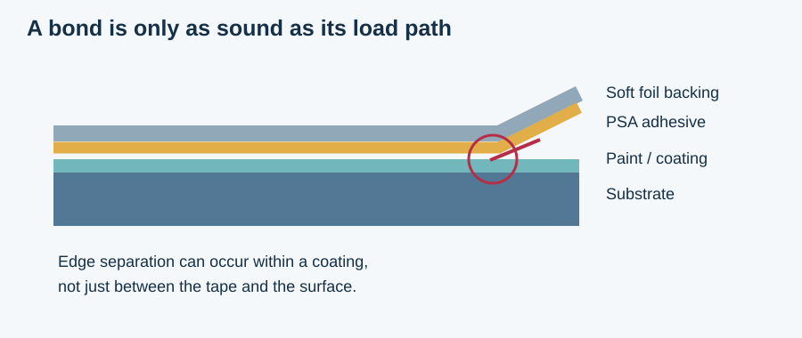
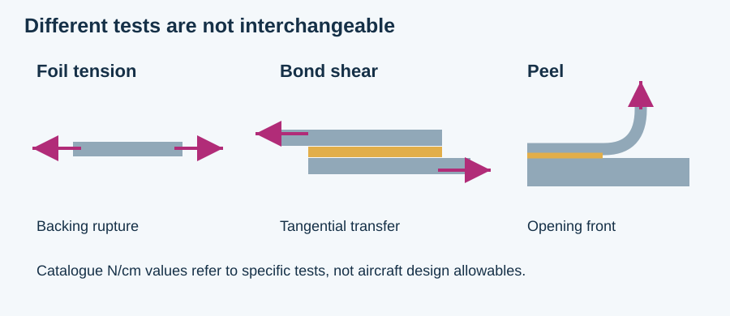
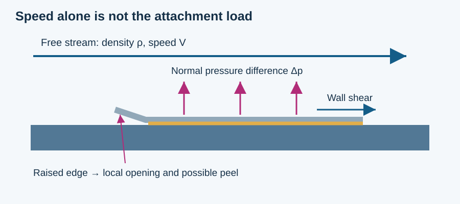
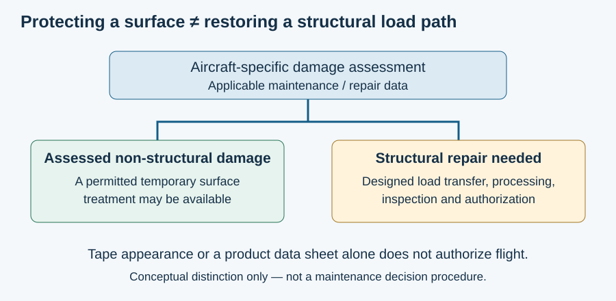

MIE 446 · Aerospace Structures · University of Massachusetts Amherst
Speed Tape and Aircraft Repairs
A silver patch can protect a surface without restoring a damaged structural load path. The distinction explains both the legitimate use of high-speed tape and why it is not a universal repair for an aircraft.
خلاصهٔ فارسی
اسپید تیپ میتواند برای پوشاندن و حفاظت موقت بعضی آسیبهای غیرسازهای به کار رود، اما جایگزین عمومی اتصال سازهای نیست. مقاومت فویل، چسبندگی در آزمون کَندن، و مقاومت یک تعمیر واقعی سه مفهوم متفاوتاند. دیدن نوار روی هواپیما نه بهتنهایی نشانهٔ ناایمنی است و نه اثبات مجازبودن تعمیر. نوع آسیب، دستورالعمل معتبر، محدودیت زمانی و بازرسی تعیینکنندهاند.
Learning goals: distinguish peel, shear and foil tension; interpret force-per-width data; relate aerodynamic pressure to edge lifting; and separate material performance from repair authorization.
What the tape is made of
“Speed tape” is a practical description, not a complete material specification. An identified product and revision matter. For example, 3M 425, English-US technical data sheet, September 2024, describes soft aluminium foil with acrylic pressure-sensitive adhesive (PSA). Its published uses also include industrial sealing and heat reflection: it is not exclusively an aviation product.

Related foil tapes need not have the same chemistry. Nitto P-12L combines foil, cotton cloth and a rubber/resin adhesive. That comparison illustrates material variety; it does not establish interchangeability or approval for an external flight repair.
| Quantity | Reported value | What it measures |
|---|---|---|
| Foil / total thickness | 0.07 / 0.12 mm | Backing versus assembled tape; ASTM D3652 |
| 180° peel adhesion | 5.1 N/cm | Force per width at 23°C and 304 mm/min; ASTM D3330 |
| Strip tensile strength | 49 N/cm | Rupture force per width; ASTM D3759 |
| Long-term temperature range | −54 to 149°C | Manufacturer's “days, weeks” category; not a universal installation envelope |
The manufacturer labels these properties typical, not specification values. Application conditions differ from service temperatures. Flammability compliance, including the cited FAR 25.853(a), is not approval of a particular repair. Regional editions and revisions must not be mixed.
Why peel is different from tension and shear
Foil tension loads the backing along its length. Bond shear transfers force roughly parallel to the surface. Peel opens a moving separation front and concentrates deformation near that front. A patch can therefore survive substantial in-plane force yet detach after an edge lifts. Failure may occur at an interface, within adhesive, in paint or in the underlying material.

PSAs deform to make contact and dissipate energy during separation. Experiments by Villey and colleagues (2015) show that peel response depends on angle, rate and large-strain adhesive behaviour. These are general PSA mechanics lessons, not numerical qualification of an aircraft tape. Long-duration shear also requires attention to creep; a short test does not settle sustained-load performance.
A force-per-width conversion
For a 25 mm strip, width is 2.5 cm. Multiplying the two catalogue values by width gives different test forces:
Typical 180° peel test: 5.1 × 2.5 = 12.75 N
Neither number is an aircraft load allowable or a working-load limit. N/cm is not MPa. Dividing an aircraft force by either number does not produce a justified safety factor; specimen, substrate, conditioning, direction, temperature, duration and failure mode must match.
Structural bonding is a different design problem
A cured structural adhesive is not merely “stronger tape.” For example, Henkel EA 9394 AERO is a two-part epoxy structural paste. Structural joints require a designed load-transfer geometry, controlled surfaces and processing, and an appropriate durability and damage-tolerance assessment.
For an assumed classroom joint, P = 100 N, width b = 25 mm and overlap L = 50 mm give:
This average hides end concentrations and eccentric-load peel. It cannot qualify either a structural bond or a taped patch.
What high speed actually changes
Speed is not a complete loading specification. Density, local pressure distribution, temperature, edge geometry and exposure time matter. Dynamic pressure is a flow scale, not automatically the pressure difference across a patch or its wall shear stress.

Use deliberately assumed values: density ρ = 0.40 kg/m³, speed V = 250 m/s, pressure-coefficient difference ΔCp = 0.20, patch area A = 0.010 m² and skin-friction coefficient Cf = 0.003.
Δp = ΔCpq∞ = 2,500 Pa
Fnormal = ΔpA = 25 N
τwall = Cfq∞ = 37.5 Pa
The assumed coefficients are not aircraft test data. Do not compare the 25 N resultant directly with the strip peel value and declare a pass. Pressure distribution, edge opening, attachment geometry and an appropriate failure model are missing. Compressible or shock-affected flow requires an appropriate aerodynamic model.
Thermal mismatch
Different layers expand differently. With assumed expansion coefficients 23 × 10−6/K and 2 × 10−6/K over ΔT = 100 K:
Over 50 mm, free differential expansion = 0.105 mm
A bonded stack cannot freely achieve both expansions; shear, peel, relaxation or damage can result. Real composite expansion is direction-dependent. These illustrative constants are not a measured foil/composite repair system.
A temporary repair still needs an engineering basis
Airbus distinguishes cosmetic, standard structural and major structural repairs. Its A350 explanation gives high-speed tape as a temporary option for assessed non-structural damage. It separately illustrates a bolted aluminium repair for a temporary structural solution. “Temporary” describes duration, not permission to ignore structural damage.

An actual manufacturer rejection
Airbus FAST 50, printed page 18 (PDF page 20), describes an A320 flap with a disbonded previous permanent repair. An airline proposed a tape cover for 1,000 flight cycles with detailed visual inspection every 100 cycles. Airbus rejected the proposal because of the damage extent and directed repair under the Structural Repair Manual. This is an engineering-support example, not an accident report or a permitted tape-repair lifetime.
In the United States, 14 CFR 43.13 requires applicable manufacturer maintenance/continued-airworthiness methods or other methods acceptable to the Administrator, and work preserving relevant airworthiness qualities. A product's catalogue description does not supply aircraft-specific repair authority. “Acceptable” and “approved” data are not interchangeable legal labels.
Questions for a repair assessment include component and damage identity, remaining load path, applicable data and revision, permitted material and process, environmental limits, inspection requirements and any removal or permanent-repair deadline. A public magazine example is not a current maintenance instruction.
Checking common claims about speed tape
The following distinctions address claims in the Persian Fars Science and Progress article titled “این چسب قطعات هواپیما را به هم میچسباند!” They are an engineering assessment, not a reproduction of that article.
| Claim | Engineering assessment |
|---|---|
| It holds aircraft parts together. | Too broad. A surface cover and a primary structural joint have different functions. Identify the actual repair and load path. |
| Every speed tape is a special aluminium alloy with acrylic adhesive. | No universal construction follows from the name; identified foil tapes have different reinforcements and adhesives. |
| It withstands supersonic flight. | No universal Mach qualification is supplied by the cited 425 data. A specific product, installation and qualified envelope are needed; this does not mean such use is impossible. |
| It is completely immune to fuel, hydraulic fluid and chemicals. | “Resistant” must name the fluid, concentration, temperature, exposure time and retained property. No blanket immunity follows. |
| Ordinary tape instantly loses polymerization in cold or heat. | Misleading mechanism. Softening, stiffening, degradation and debonding depend on polymer, environment and time; “depolymerization” is not a generic instant explanation. |
| A roll universally costs hundreds to a thousand dollars. | Price requires a dated SKU, dimensions, quantity and procurement context. It is not a material property or a universal market price. |
| A patch proves maintenance quality, or proves the aircraft unsafe. | Neither follows from appearance alone. Authorization and damage assessment are decisive. |
| Standard foil tape restores stealth coatings. | Radar performance requires a separately specified and qualified repair system; no such performance follows from these foil-tape data. |
Using the case in aerospace structures
Begin with a free-body diagram and ask what must carry the load if the coating or adhesive separates. Then distinguish stiffness, strength, fracture and durability: a high tensile strength does not guarantee that an edge remains attached.
- Draw separate free-body diagrams for the foil and the substrate. Where do normal and tangential tractions act?
- Double speed while holding the illustrative coefficients and density constant. Dynamic pressure and the assumed normal force rise fourfold; why does that still not determine patch survival?
- Double strip width. The reported test forces double under comparable test conditions. Why does this not establish a universal allowable?
- Double overlap in the average-shear example. The average halves; explain why the peak edge stress need not halve.
- Compare a cosmetic surface cover, a bolted doubler and a bonded structural joint. Mark the load path and the evidence needed for each.
- Evaluate an AI-generated “safe repair” calculation. Reject conclusions that combine unrelated test modes, omit time/environment or confuse catalogue data with aircraft authorization.
A small classroom demonstration
Using non-aircraft sample materials and ordinary laboratory safety procedures, compare peeling a fresh strip at different angles and rates. Record width, substrate, conditioning and failure location. The purpose is to observe mode and rate dependence, not to qualify aviation tape. A weak paint layer can be a useful explanation on a diagram without deliberately damaging equipment or coatings.
Primary sources and further reading
- 3M Aluminum Foil Tape 425 technical data sheet, English-US, September 2024, pp. 1–2. Exact product data and their typical-value limitation.
- Nitto P-12L product description. A related foil/cloth and rubber/resin construction, not an interchangeability authorization.
- Airbus, Keeping in shape, November 2021. Cosmetic versus structural repair examples.
- Airbus FAST 50, 24 hours with AIRTAC, printed p. 18. Rejected A320 flap tape proposal; archive upload date is not the event date.
- 14 CFR 43.13, Performance rules. US regulatory context; applicable jurisdiction and current maintenance data remain essential.
- Villey et al., Rate-dependent elastic hysteresis during the peeling of Pressure Sensitive Adhesives, Soft Matter, 2015. Open author manuscript.
- Henkel, LOCTITE EA 9394 AERO. Example of a two-part structural epoxy paste, distinct from PSA foil tape.